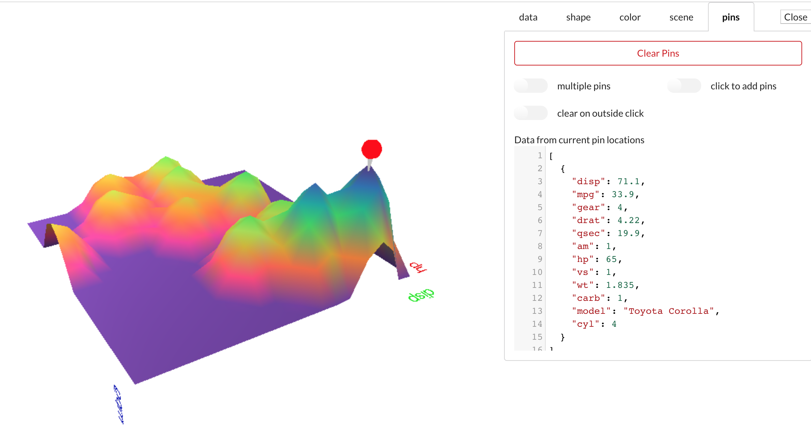

Matthew Schroyer
Working with HTML5, CSS, JavaScript, R, Python, and Arduino to answer questions and find solutions.
Excel to 3D Terrain Application

This application will turn an Excel spreadsheet into a 3D terrain. Each of the three dimensions of the terrain can be mapped to a dimension of the spreadsheet data. Various qualities of the terrain, such as color, resolution, and smoothness can be set. Additionally, the user can place "pins" in the terrain, which can identify and display the underlying data from spreadsheet. On load, generates initial terrain with the "MTCars" dataset, which is a set of car specifications from the 1970s. Built as a "xap" (application) in the Exaptive Studio, featuring Three.js and Semantic UI libraries.
KACEboard

This is a simplified KACE dashboard, which allows the user to select from a number of available service providers, see the ticket list for the provider, and receive a chart showing historical ticket activity. User also can save the chart for reports or external use. Uses PHP5 and highcharts.js. Based on the Twitter Bootstrap for Kace Service Desk developed by Jason Rappaport of Drexel University.
Room Finder and 3D Floorplan

A simple application to locate a classroom on the OCCC main campus and visualize multi-story floorplans in 3D. Uses HTML5, ajax, CesiumJS, and GIS files.
Air OKC Scrape-n-Viz

Building on the success of the DustDuino IoT initiative, AirOKC is a "serverless" scraping and visualization platform. Ozone readings are scraped from the Oklahoma Department of Environmental Quality (ODEQ) monitor 401090033 on an hourly basis. The back-end is a Google Sheet fed via a scraping script. On the front-end, Tabletop reads the sheets, while d3 handles the viz. Please allow the chart several seconds to load; Google Sheets is not the quickest data host.
Traffic Dataviz

A vizualization of a morning commute from January to August 2015 in the OKC metro area. GPS data was logged on an Android device, parsed with Python, and vizualized using Cesium.js and a CartoDB basemap.
Three.js Heart Viz

Developed for a college anatomy class, this Three.js visualizes a model of a human heart. With this heart visualization, students can study the heart, even on a smartphone while they're on the bus. This digital version of the physical model was scanned using hundreds of photos, and digitized using Agisoft Photoscan. Three.js provides an easy way to render the .obj and .mtl files that are exported by Photoscan.
Hike up Elk Mountain

A virtual trip up Elk Mountain in Oklahoma, using HTML5, GIS files, Cesium.js, and Panellum.js. The user can visualize the path up the mountain, its relationship surrounding mixed grass prairie, and sample the flora and fauna (including the state reptile).